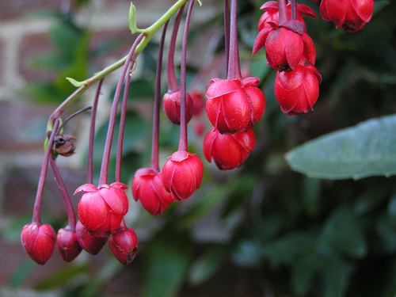

Berberidopsidaceae
Berberidopsidaceae is a small family of flowering plants comprising only two genera, Berberidopsis and Streptothamnus, and three species in total. These are woody vines or scrambling shrubs exhibiting a striking disjunct distribution between Chile and eastern Australia. The family holds significant phylogenetic importance, representing the core family of the small order Berberidopsidales, an early-diverging lineage within the core eudicots.
Overview
Berberidopsidaceae is a fascinating small family notable for its restricted and widely separated (disjunct) distribution, reflecting ancient Gondwanan connections. It includes the genus Berberidopsis, with one species in the temperate rainforests of Chile and another in eastern Australian rainforests, and the genus Streptothamnus, with one species also in eastern Australia. Members are typically evergreen woody vines (lianas) or scrambling shrubs.
The family's phylogenetic position is particularly noteworthy. Once placed uncertainly near families like Flacourtiaceae, molecular data established Berberidopsidaceae (along with the monotypic Chilean family Aextoxicaceae) in its own distinct order, Berberidopsidales. This order represents an early evolutionary branch among the core eudicots, sister to the large clade containing the orders Santalales and Caryophyllales.
While the family has limited direct economic importance, the Chilean species Berberidopsis corallina (Coral Plant) is cultivated horticulturally in temperate climates for its attractive, pendant clusters of coral-red flowers.
Quick Facts
- Scientific Name: Berberidopsidaceae
- Common Name: (None widely used)
- Number of Genera: 2 (Berberidopsis, Streptothamnus)
- Number of Species: 3
- Distribution: Disjunct: Temperate rainforests of Chile and Eastern Australia (Queensland, New South Wales).
- Evolutionary Group: Eudicots - Core Eudicots - Berberidopsidales
Key Characteristics
Growth Form and Habit
Members are evergreen woody vines (lianas) or scrambling shrubs, climbing over other vegetation in forest environments.
Leaves
Leaves are simple, arranged alternately along the stems, and possess petioles. The leaf blades are typically leathery (coriaceous) with margins that are often toothed (dentate or serrate), sometimes bearing spine-tipped teeth (Berberidopsis), or occasionally entire. Stipules are generally absent, though minute, quickly falling stipules are reported for Streptothamnus.
Flowers
Flowers are bisexual, radially symmetrical (actinomorphic), and arranged in terminal or axillary racemes or panicles (Berberidopsis) or are solitary in leaf axils (Streptothamnus).
- Perianth: Distinctive in lacking clear differentiation into sepals and petals. It consists of 9-15 tepals that are usually spirally arranged or in indistinct whorls. The outer tepals often grade from small bracteole-like structures into larger, more petal-like inner tepals. Tepal color varies, being notably reddish in B. corallina, whitish or yellowish in others.
- Stamens: Numerous (variable count, ~12 to many), with relatively short filaments and anthers that dehisce via longitudinal slits.
- Ovary: Superior, composed of 3-5 fused carpels forming a single locule (chamber). Ovules are numerous and attached to the ovary wall (parietal placentation) or sometimes appear basal. There is a single short style topped by a lobed or head-like (capitate) stigma, with the number of lobes reflecting the carpel number.
Fruits and Seeds
The fruit is a fleshy, indehiscent berry, often dark blue-black or reddish when ripe. It contains several to many seeds, which typically possess endosperm.
Chemical Characteristics
Specific chemical profiles are not extensively documented but likely include tannins and other compounds common in woody eudicots. No major economically important compounds are known from the family.
Field Identification
Identifying Berberidopsidaceae requires attention to its specific distribution, habit, leaf features, and unique flower structure:
Primary Identification Features
- Habit: Woody vine or scrambling shrub.
- Location: Found naturally only in Chile or Eastern Australia.
- Leaves: Alternate, simple, leathery, often with toothed or spiny margins.
- Flowers: Radially symmetric, bisexual, with multiple (9-15) undifferentiated tepals (not distinct sepals/petals), spirally arranged or in weak whorls.
- Stamens: Numerous.
- Fruit: A fleshy berry.
Secondary Identification Features
- Perianth Color: Often reddish (B. corallina) or whitish/yellowish.
- Ovary: Superior, 1-loculed with parietal placentation (many ovules).
- Habitat: Typically found in moist temperate rainforests or wet sclerophyll forests.
- Stipules: Absent or minute.
Seasonal Identification Tips
- Year-round: The evergreen, woody vine habit and characteristic alternate, leathery, often toothed leaves are visible throughout the year.
- Flowering: Flowers with their distinctive multiple tepals appear seasonally (e.g., summer in the southern hemisphere).
- Fruiting: The berry fruits develop following flowering.
Common Confusion Points
- Other Vines: Distinguishing from other vines in Chile or E Australia requires examining the specific combination of alternate, leathery, toothed leaves (without stipules) and the unique flower structure (multiple spiralled/undifferentiated tepals, numerous stamens, superior ovary, berry fruit).
- Berberis (Berberidaceae): Despite the similar name (Berberidopsis), true Berberis species are shrubs (not typically vines), have clearly differentiated sepals and petals usually in whorls of 3, fewer stamens (typically 6), often yellow flowers, and belong to the unrelated order Ranunculales.
- Other families with berries: Many families produce berries, but the combination of other features, especially the perianth structure, is key to identifying Berberidopsidaceae.
Field Guide Quick Reference
Look For:
- Woody vine/scrambling shrub
- Found only in Chile or E Australia
- Alternate, simple, leathery leaves
- Margins often toothed or spiny-toothed
- Flower with 9-15+ undifferentiated tepals
- Numerous stamens
- Fruit = fleshy berry
Key Variations:
- Flower color (red vs. white/yellow)
- Inflorescence type (raceme/panicle vs. solitary)
- Leaf margin details (toothed vs. spiny)
Notable Examples
The family comprises only three species in two genera:

Berberidopsis corallina
Coral Plant, Coral Vine
Native to the temperate rainforests of Chile. A woody vine known for its attractive pendant racemes of globular, coral-red flowers composed of multiple tepals. Leaves are alternate, leathery, and often have spiny-toothed margins. Cultivated as an ornamental in suitable climates.

Berberidopsis beckleri
Mongarlowe Vine
Found in the rainforests of eastern Australia (New South Wales and Queensland). Similar woody vine habit to its Chilean relative, but typically has less spiny leaf margins and whitish or less intensely colored flowers compared to B. corallina.

Streptothamnus moorei
Smooth Streptothamnus
Also native to eastern Australian rainforests. A woody climber distinguished from Berberidopsis by having solitary axillary flowers (rather than racemes/panicles) and minute stipules that fall early. Flowers are typically yellowish or cream-colored.
Phylogeny and Classification
Berberidopsidaceae occupies a crucial position in the phylogeny of flowering plants. It is placed in its own order, Berberidopsidales, along with the monotypic Chilean family Aextoxicaceae. This order represents an early-diverging lineage within the core eudicots.
Molecular phylogenetic studies have shown that Berberidopsidales is the sister group to a massive clade comprising the orders Santalales and Caryophyllales. This relationship highlights Berberidopsidaceae as a relictual family preserving features potentially ancestral to this large group of core eudicots. Its disjunct distribution between South America and Australia is a classic example of a Gondwanan pattern, suggesting the family's origins date back to before the final breakup of the supercontinent.
Position in Plant Phylogeny
- Kingdom: Plantae
- Clade: Angiosperms (Flowering plants)
- Clade: Eudicots
- Clade: Core Eudicots
- Order: Berberidopsidales
- Family: Berberidopsidaceae
Evolutionary Significance
Berberidopsidaceae is evolutionarily important for several reasons:
- Early Core Eudicot Lineage: As part of an early-branching order, it helps illuminate the ancestral characteristics and early evolutionary steps within the core eudicots, particularly the lineage leading to Santalales and Caryophyllales.
- Gondwanan Distribution: Its presence in both Chile and Australia provides strong biogeographic evidence for ancient land connections and the breakup of Gondwana.
- Relictual Features: Possesses a combination of features, such as the undifferentiated spiral/weakly whorled perianth, that may represent ancestral states compared to more derived core eudicots.
- Understanding Phylogenetic Relationships: Its discovery and placement helped resolve long-standing uncertainties about the relationships between major eudicot clades.